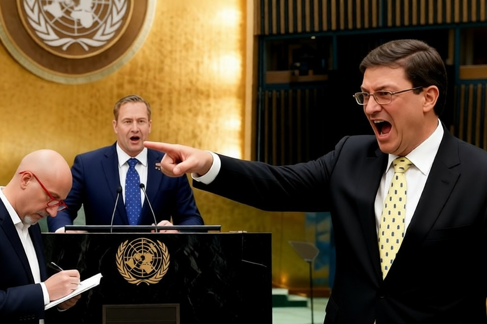

Geopolitica · 29 ottobre 2026
Embargo a Cuba, all'Onu l'Italia si astiene per la prima volta

La risoluzione che chiede agli Stati Uniti di togliere l'embargo passa da trentaquattro anni, ma i voti a favore sono crollati. Fra i paesi che non hanno votato con l'Avana c'è anche l'Italia, con la Germania e altri alleati.
di Franco Zanghì
Martedì 27 ottobre, nella sala dell'Assemblea generale delle Nazioni Unite a New York, l'ambasciatore americano Mike Waltz interviene contro la risoluzione che chiede la fine dell'embargo a Cuba. Dalla delegazione cubana si alzano in piedi e protestano; il ministro degli Esteri Bruno Rodríguez Parrilla lascia il suo posto e va verso il podio gridando «bugiardo». Waltz risponde «questa è l'America, amico mio», e il presidente dell'Assemblea sospende la seduta.
Il giorno dopo si è votato: 137 paesi a favore, 17 contrari, 25 astenuti. L'anno scorso erano 165 a favore, 7 contrari e 12 astenuti. È il sostegno più basso degli ultimi vent'anni.
La scelta italiana
L'Italia si è astenuta, e secondo l'agenzia Reuters è la prima volta da molti anni. Non ha votato contro la risoluzione: ha smesso di votarla. In una nota diffusa il 29 ottobre, il ministero degli Esteri ha spiegato che l'Italia, «nel ribadire la vicinanza al popolo cubano e la necessità di continuare gli aiuti umanitari, ha scelto di astenersi assieme ad altri paesi alleati come Germania, Olanda, Polonia, Grecia, Bulgaria, Romania, Estonia, Lettonia e Croazia».
Nella stessa nota la Farnesina afferma che «le decisioni delle autorità cubane sono il motivo della crisi attuale», si dice «profondamente preoccupata per la situazione dei diritti umani a Cuba», chiede il rilascio di tutti i prigionieri politici e osserva che la posizione dell'Avana sulla guerra della Russia contro l'Ucraina resta incompatibile con i principi della Carta delle Nazioni Unite.
Perché tanti paesi hanno cambiato voto
Il voto dell'Onu non obbliga nessuno, perché l'embargo lo può togliere soltanto il Congresso americano: è un voto politico, che si ripete dal 1992. Il massimo del consenso per Cuba è arrivato nel 2015 e nel 2017, gli anni del disgelo di Barack Obama, quando i sì furono 191.
Waltz ha ammesso di avere fatto pressione sui colleghi europei e rivendica che i paesi che hanno cambiato posizione siano triplicati. Secondo Lee Schlenker, ricercatore del Quincy Institute di Washington, con le capitali europee ha usato un argomento preciso: i cubani che combattono per la Russia in Ucraina. L'Avana sostiene che la campagna sia stata guidata da Waltz e dal segretario di Stato Marco Rubio e parla di minacce di dazi, visti negati e aiuti sospesi, ma non ha portato prove.
L'isola al buio
A Cuba la vita è diventata durissima. Quest'anno l'isola è rimasta più volte completamente senza elettricità, a marzo, ad agosto e a settembre; a maggio il governo ha ammesso di avere esaurito il gasolio. Hanno chiuso alberghi, alcune compagnie aeree hanno sospeso i voli, e da gennaio Washington applica dazi a chi vende petrolio a Cuba. Per l'Avana è questa la causa di tutto, mentre le autorità locali hanno parlato anche di centrali elettriche senza manutenzione.
Waltz all'Onu ha sostenuto che il blocco non esiste: nei primi otto mesi dell'anno gli Stati Uniti hanno esportato a Cuba merci per 876 milioni di dollari, e la colpa della crisi, secondo lui, è del governo cubano. Che sulla politica non arretra: «Il sistema politico di Cuba non è negoziabile», ha detto a marzo il viceministro degli Esteri Carlos Fernández de Cossío, mentre il presidente Miguel Díaz-Canel ha spiegato ad aprile alla televisione americana Nbc che l'idea di rivoluzionari che si arrendono non fa parte del loro vocabolario.
Il passaggio da guardare è il voto del prossimo anno: se altri paesi europei seguiranno Italia e Germania, l'Europa smetterà di essere il blocco compatto che negli ultimi anni votava con Cuba. Rodríguez la legge al contrario: 137 paesi su 193 continuano a condannare l'embargo, e a restare isolata è Washington.
Fonti
- Nazioni Unite, UN Web TV, «General Assembly: 27th plenary meeting, 81st session», 27 ottobre 2026
- UN News, «Backing for UN call to end Cuba embargo falls to 20-year low», 28 ottobre 2026
- Reuters, ripreso da Internazionale, «US gets more countries to oppose UN resolution condemning its Cuba embargo», 28 ottobre 2026
- Onu Italia, «Embargo a Cuba: la Farnesina spiega le ragioni dell'astensione», 29 ottobre 2026
- L'Espresso, «All'Onu passa la mozione contro il blocco Usa su Cuba ma l'Italia si astiene», 29 ottobre 2026
- Al Jazeera, «UN votes to condemn embargo of Cuba despite US lobbying push», 28 ottobre 2026
- Responsible Statecraft, Lee Schlenker (Quincy Institute), «Despite intense US pressure, UN votes to condemn Cuba blockade», 28 ottobre 2026
- Latin Times, «UN General Assembly session suspended after U.S. and Cuban officials exchange accusations», 28 ottobre 2026
- Al Jazeera, «Cuba categorically rejects prospect of removing Diaz-Canel in US talks», 20 marzo 2026
I numeri del voto sono quelli riportati dalle agenzie e dalle Nazioni Unite il 28 e il 29 ottobre; alcune ricostruzioni della stessa giornata indicavano 130 voti a favore. Le minacce di dazi, visti e aiuti sospesi sono accuse del governo cubano, presentate senza prove.